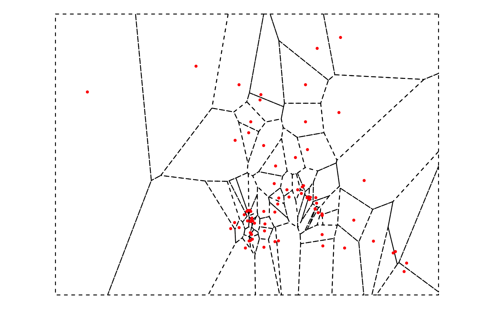
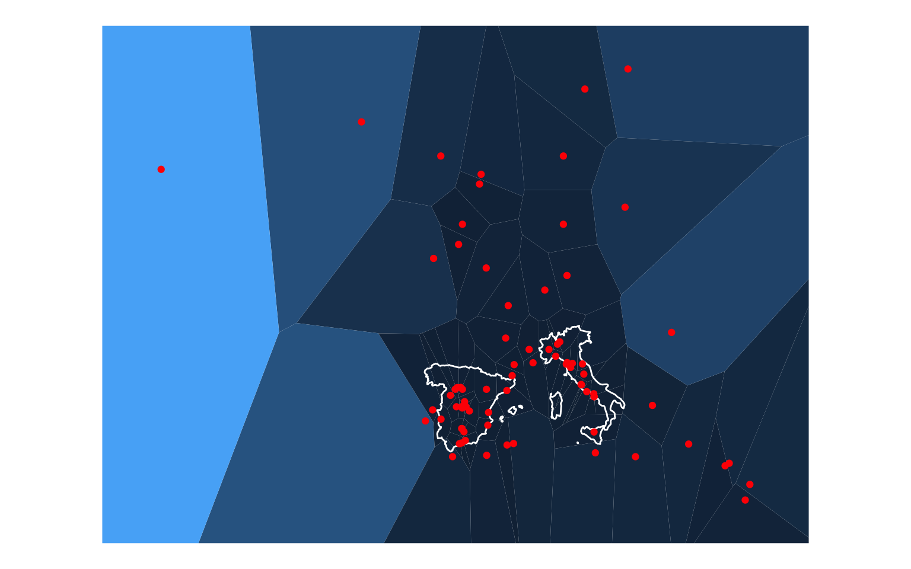
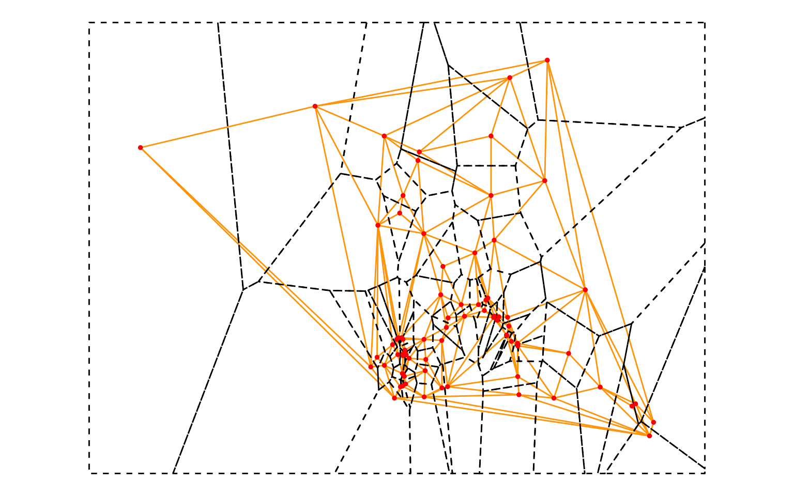
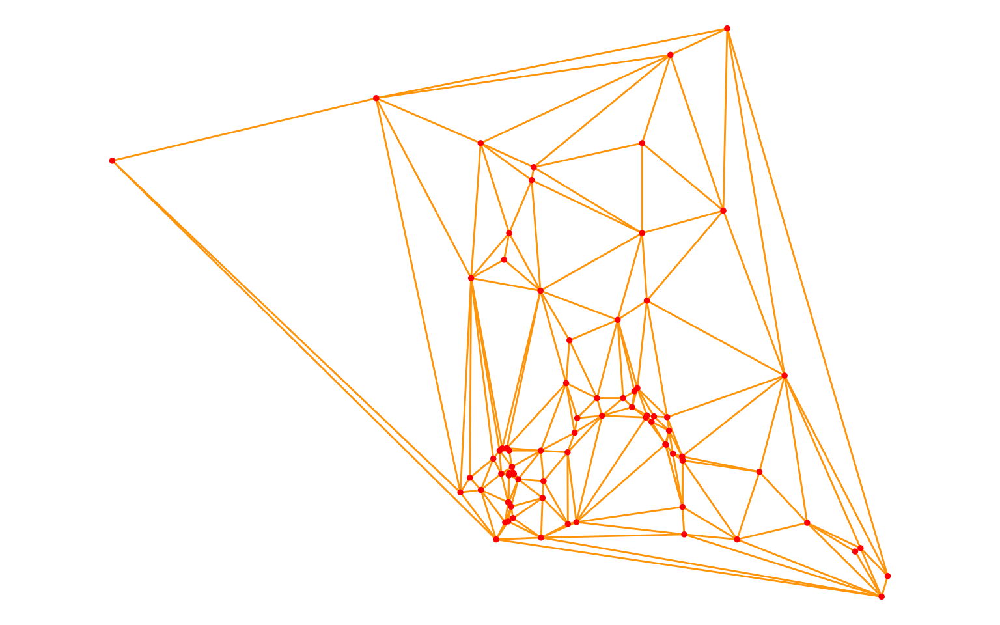
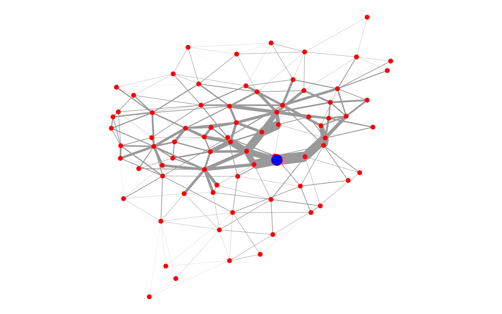

Core and periphery
A spatial feature of the genre models —Heliodorus’ Ethiopica, Cervantes’ Persiles— is the presence of a geographical division between core and periphery. This is an attempt to automatically compute the geographical periphery and center of the places mentioned in a text using network metrics.
The places have been refined manually, e.g., locations like Thule has been added in Persiles.
Methodology
The method consists of converting into spatial networks the geolocated places mentioned in the novels, in order to apply to them measures of centrality (eigenvector values).
The places (converted to spatial points) have been connected with a Delaunay triangulation. The resulted TIN (Triangulated Irregular Network) gets weighted edges based on euclidean distances, so that the value of the weighted edge depends on the distance between points. We applied eigenvector centralities to the graph, resulting in the lowest eigenvector value to the closest points, the highest to the furthest.
The different steps to get from geolocated places to nodes in a graph are visualized below.
To compute the transformations, a set of functions in R by Pebesma (2013) were used together with the R packages deldir (Turner 2019) and ggvoronoi (Garrett 2018). For the measures of centrality the eigen_centrality function from the igraph package (Csardi 2019) was applied. Data and maps visualization use ggplot2 (Wickham 2016) and leaflet (Cheng 2018).
Voronoi diagrams

Delaunay triangulation

Graph from a TIN

Metrics of Persiles (eigenvector centrality)
Plotting metrics on a map
The lowest eigenvector values within the first quantile (Q1) are marked in red.
Persiles core vs periphery
Peregrino
Semprilis
Eustorgio
Comparation of Greek Literature
The geolocations of the Aethiopica and Odyssey are from the ToposText project.
Gephi Viz
Oracle of Delphi as geographical center in Heliodorus’ Aethiopica. The width of the edges represents the distances between points. The network core (Ethiopia, Seres, Egypt,…) shows actually the peripheral places.
2020 · José Luis Losada Palenzuela ·